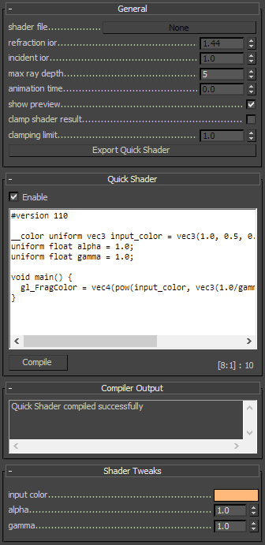
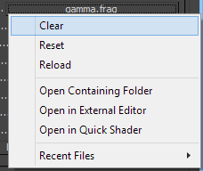

VRayGLSLTex
VRayGLSLTex Overview
The VRayGLSLTex texture map can be used to load GLSL shaders (.frag, .glsl files), V-Ray precompiled fragment shaders (.pfrag files) and render them directly with V-Ray. If the shader file describes a material (rather than a texture), it can be rendered by either assigning the texture map to the color slot of a VRayLightMtl material or just by using the VRayGLSLMtl material.
Note that both VRayGLSLMtl and VRayGLSLTex share the same user interface. See the V-Ray GLSL page for more detailed description of the language and examples.
This texture map and material is the first stage of the V-Ray implementation of GLSL support. In this version, the shaders are compiled to byte code for a software virtual machine, which is then interpreted. Due to this run-time interpretation, GLSL shaders can be somewhat slower to render than V-Ray shaders written in C++. In future builds of V-Ray, shaders will be directly compiled to machine code for faster rendering.
General
 The "General" rollout holds parameters that control common shader characteristics.
Shader file - specifies the .glsl, .frag, or .pfrag file which contains the shader code. This button control also supports a context menu with the following options:

-
Clear - Unloads the current shader and restores the plug-in as if no shaders have been loaded.
-
Reset - Reloads the shader and resets its parameters to the default values.
-
Reload - Reloads the shader but keeps the current parameter values.
-
Open Containing Folder - Reveals the shader location in Explorer.
-
Open in External Editor - Opens the shader in an appropriate external text editor.
-
Open in Quick Shader - Opens the shader in the built-in text editor.
-
Recent Files - Holds a list of the recently loaded shaders and an option to clear the list.
Refraction IOR - the refraction IOR of the shader.
Incident IOR - the incident IOR value for the shader.
Max ray depth - specifies the maximum reflection/refraction depth for the shader.
Animation time - specifies the animation time for the shader.
Show preview - determines whether to render a shader preview in the material editor.
Clamp shader result - determines whether to force the result in the [0, Clamping limit] range or not.
Clamping limit - specifies the upper clamp limit if Clamp shader result is enabled.
Viewport color - specifies the diffuse component of the material used in the viewport shading.
Export shader - Allows the user to save his shader file as a binary precompiled fragment shader file (.pfrag ).
Quick Shader
The "Quick Shader" rollout allows for fast shader sketching inside the plug-in without the use of external files. The text area has a context menu implementing basic text editing function. While the text area is in focus pressing Ctrl+Enter compiles the shader, keeping its current parameters. The Ctrl+Shift+Enter combination compiles the quick shader but resets its parameter to defaults. Additional information is presented at the bottom right in the following format: [line : column] : line count.
Enable - Activates the built-in text editor.
Compile - Compiles the written shader, keeping the current shader parameters. To compile the shader and reset its parameters to default, hold the Shift button and then click Compile.
Additional
Any additional shader-specific parameters are listed in additional rollouts. For GLSL shaders a single rollout named "Shader Tweaks" is shown.
Compiler Output
The "Compiler Output" rollout holds shader compilation and manipulation result messages.
Notes
-
Currently the VRayGLSLTex texture and VRayGLSLMtl are only available in 3ds Max 2011 and later.
References
-
Randi J. Rost et al, OpenGL Shading Language, second edition, Addison-Wesley, 2006
-
Lighthouse3D.com - a useful site that describes the basics of GLSL and has many shader examples
http://www.lighthouse3d.com/tutorials/glsl-tutorial/communication-opengl-shaders/